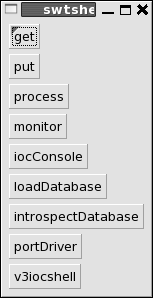
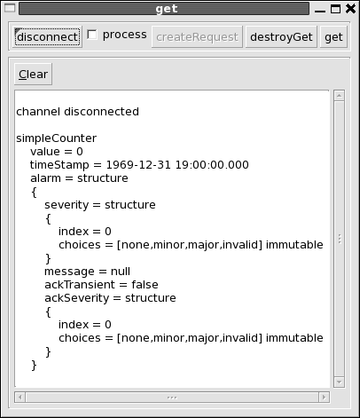
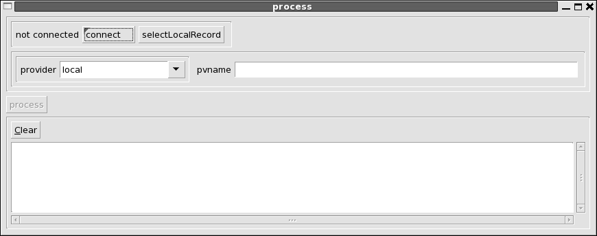
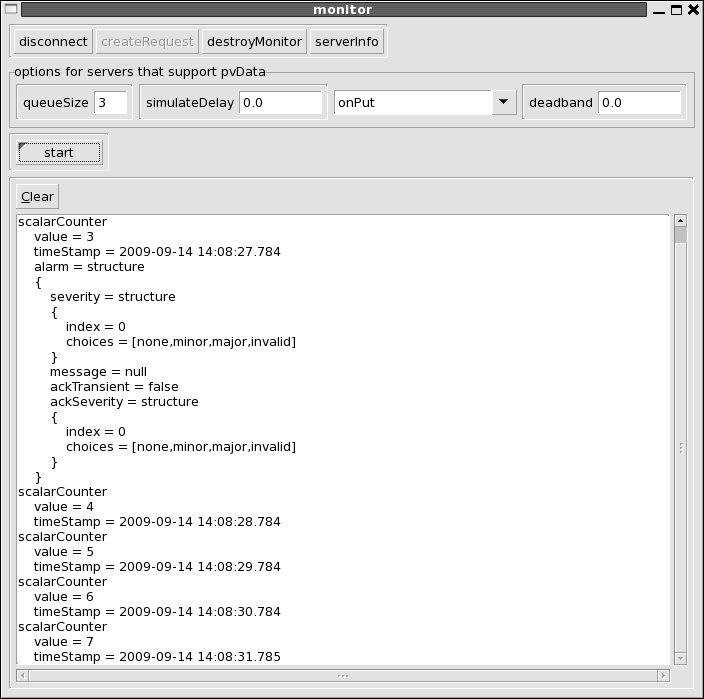

|
||||||||||
| PREV PACKAGE NEXT PACKAGE | FRAMES NO FRAMES | |||||||||
See:
Description
| Interface Summary | |
|---|---|
| CDGet | Get values from a user and put them in a CD (ChannelData) |
| CDPrint | Print contents of a CD. |
| ChannelConnect | A set of controls for connecting to a channel. |
| PropertyGet | Get an array of the property names for a channelField. |
| SelectField | A shell for selecting a field of a record. |
| SelectLocalRecord | Shell to select the name of a local JavaIOC record. |
| Class Summary | |
|---|---|
| CDGetFactory | Factory which implements CDGet. |
| CDPrintFactory | Factory which implememnts CDPrint. |
| ChannelConnectFactory | |
| GetFactory | A shell for getting values from a channel. |
| IntrospectDatabaseFactory | A shell for introspecting a JavaIOC Database. |
| IOCConsoleFactory | A shell for getting values from a channel. |
| LoadDatabaseFactory | A shell for loading a new Database Definition or Record Instance into a running JavaIOC. |
| MonitorFactory | A shell for monitoring a channel. |
| PortDriverFactory | A shell for introspecting a JavaIOC Database. |
| ProcessFactory | Shell for processing a channel. |
| PropertyGetFactory | Factory that implements PropertyGet. |
| PutFactory | |
| SelectFieldFactory | Factory which implements SelectField. |
| SelectLocalRecordFactory | Factory which implements SelectLocalRecord. |
| SWTMessageFactory | Factory that manages messages. |
| SwtshellFactory | A GUI iocshell implemented via Eclipse SWT (Standard Widget Toolkit). |
| V3iocshellFactory | Call the V3 iocshell |
This package provides a GUI shell implemented via the SWT toolkit that comes with eclipse. The default JavaIOC package overview document gives brief instructions for starting the swtshell. If you want to communicate with a V3 EPICS IOC then the option "-server server/beforeStartIOC.txt" must be given when the javaIOC is started.
The following window appears when swtshell is started:

The window has the following buttons:
NOTE: After text is typed into any text input window, the enter key must be pressed.
This window gets data from a local or remote IOC. The data is accessed via javaIOC Channel Access. Two types are implemented:
For now only local Channel Access is implemented for a javIOC. Thus it is only possible to pass structured data within a single javaIOC.
This can be either a V3 EPICS IOC (or a server implemented via the portable Channel Access Server) or a javaIOC running the caV3 server. This means that only the following data can be accessed:
See package org.epics.ioc.caV3 for details about caV3.
The following window appears when the get button is pushed:

Note: in order to make a connection to an EPICS IOC the following is done:
The first row has the following widgets:
The second row allows the user to select a provider and to specify a pvname. Currently only two providers are available: local and caV3. The local provider is just the javaIOC to which swtshell is connected. caV3 is the V3 EPICS Channel Access client (JCA/CAJ) which can commuinicate with V3 EPICS Channel Access servers. If the local provider is chosen than the user can select a pvname via the controls on the first row or can enter the pvname directly. If caV3 is specified then the pvname must be entered direrctly.
A pvname is entered directly by entering the value into the pvname box and pressing return. The pvname is of the form "record.field".
For javaIOC records field is of the form "name.name..." where where each name is a field name or a property name. If just the record name is given then the entire record is selected.
For caV3 records field is a single name. If not specified VAL is assumed. Both VAL and value mean VAL.
The third row is for caV3. It is used to select caV3 properties that will be requested via caV3.
After get has connected to a pv, the fourth row is used to request a get. It has the following controls:
The following window appears when the put button is pushed:
The controls are similar to the controls for get except that no property buttons are present because put request do not have associated properties. For a javaIOC record any field, including the entire record can be selected.
If a primitive or array of primitives is selected then when put is clicked the following happens:
If a structured field is chosen and put is clicked the following happens:
The following window appears when the process button is pushed:

The controls are similar to the controls for get exxept that no controls are available for properties or fields because they are not meaningful for a process request.
The following window appears when the monitor button is pushed:

The controls in the first three rows are identical to the controls for get. The forth and fifth rows provide options for monitor:
The following window appears when the loadDatabase button is pushed:

This is used to load additional IOCDB definitions to a running IOC. It has the following controls:
The following window appears when the introspectDatabase button is pushed:

The top menubar allows the use to see all the structure definitions in the master database.
The next three row allows the user to select and interact with a local record. The select button is used to select a local record. The text window after select shows the currently selected record and can also be used to enter a record name. The remaining buttons apply to the selected button. They are:
The third row has two buttons that show information. They are:
The following window appears when the portDriver button is pushed:

The first row has buttons to select a port and a device. The other rows are for setting trace options and for connect and enable commands.
The following window appears when the iocConsole button is pushed:

When this is started, it calls iocdb.addRequester where iocdb is the master IOCDB. Whenever any code sends a message to the iocdb, the message is displayed on the iocConsole window. Note that iocdb puts the messages on a queue and has a separate thead that send the messages to the requesters.
|
||||||||||
| PREV PACKAGE NEXT PACKAGE | FRAMES NO FRAMES | |||||||||